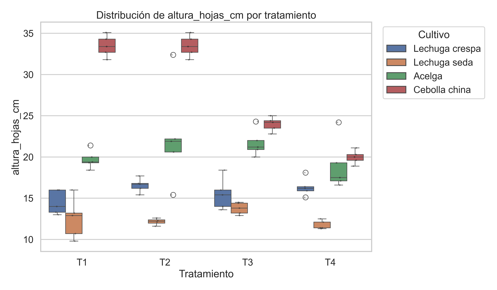
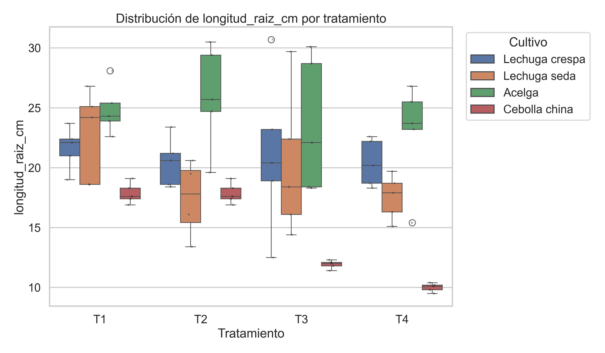
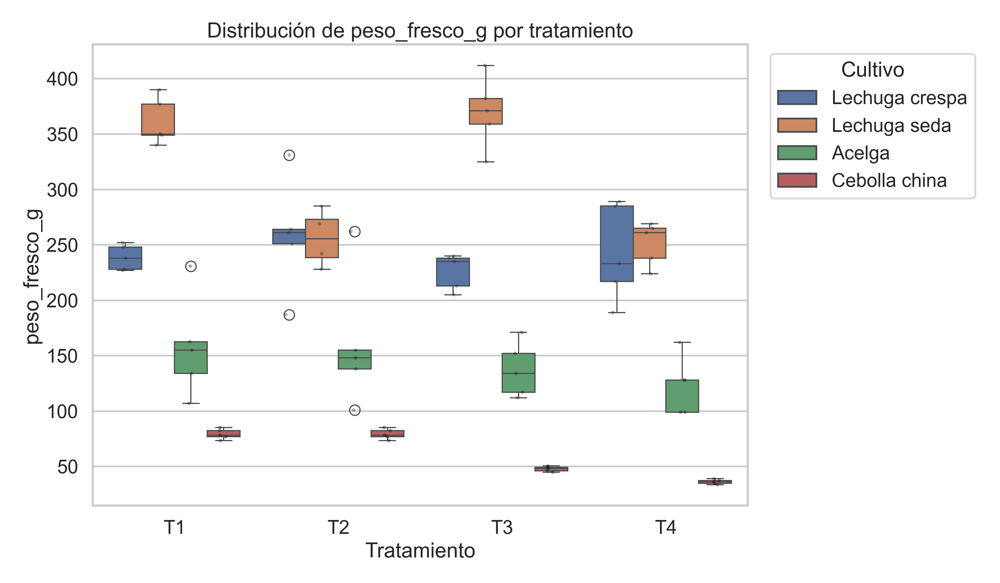
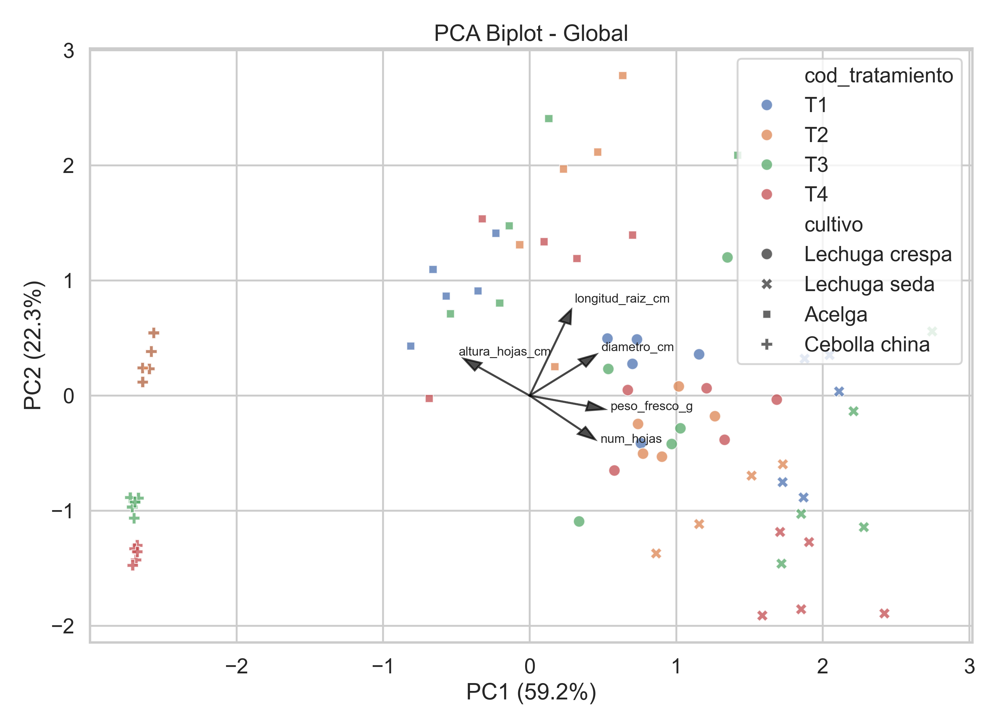
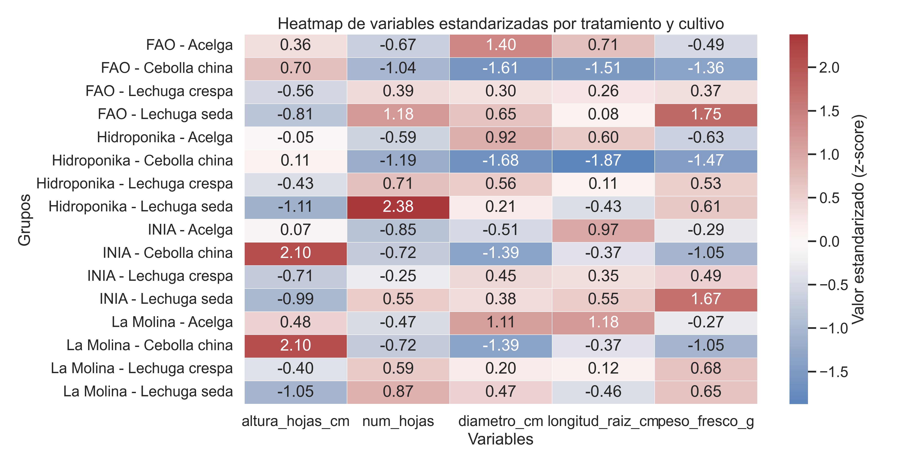

Contenido
Resumen Introducción Metodología Resultados Figuras Discusión Conclusiones TRL y proyección RepositorioResumen
El presente estudio evaluó de manera exploratoria el desempeño agronómico de cuatro soluciones nutritivas en la producción de hortalizas de hoja —lechuga crespa, lechuga de seda, acelga y cebolla china— cultivadas en un sistema hidropónico NFT bajo condiciones de la región Lambayeque, Perú.
Se compararon cuatro tratamientos: solución INIA Sumac-Yuyayqui (T1), solución La Molina (T2), solución FAO (T3) y solución comercial Hidroponika (T4), empleando módulos NFT independientes. El análisis integró estadística descriptiva, ANOVA exploratorio, tamaños de efecto y análisis de componentes principales (PCA), considerando la ausencia de réplica experimental a nivel de módulo.
A nivel global, el mayor peso fresco promedio correspondió a T1 (209.22 g), seguido de T3 (195.24 g), T2 (185.16 g) y T4 (163.36 g). El PCA explicó el 81.47% de la varianza total en los dos primeros componentes, evidenciando patrones diferenciados entre tratamientos asociados a biomasa y desarrollo radicular.
Introducción
La hidroponía NFT constituye una alternativa tecnológica de alta eficiencia para la producción de hortalizas de hoja, especialmente en contextos donde existen restricciones de suelo, agua o calidad ambiental. En estos sistemas, la solución nutritiva cumple un rol central al determinar la disponibilidad y balance de nutrientes esenciales para el crecimiento vegetal.
En el contexto de Lambayeque, el desarrollo de soluciones nutritivas adaptadas a condiciones locales representa una brecha tecnológica relevante, particularmente para sistemas orientados a agricultura familiar. Este estudio aporta evidencia técnica inicial para identificar patrones de desempeño agronómico y orientar futuras etapas de validación y escalamiento.
Metodología
Sistema experimental
Cuatro módulos hidropónicos NFT independientes, cada uno con recirculación propia y capacidad de 80 plantas.
Tratamientos
- T1: INIA Sumac-Yuyayqui
- T2: La Molina
- T3: FAO
- T4: Hidroponika
Cultivos evaluados
- Lechuga crespa
- Lechuga seda
- Acelga
- Cebolla china
Variables
- Altura de hojas
- Número de hojas
- Diámetro
- Longitud de raíz
- Peso fresco
Enfoque analítico
- Estadística descriptiva por tratamiento y cultivo.
- ANOVA exploratorio de una vía.
- Tamaños de efecto mediante d de Cohen y g de Hedges.
- Análisis de componentes principales (PCA).
- Visualización mediante boxplots, biplot y heatmap.
Resultados
Se analizaron 80 observaciones correspondientes a cuatro tratamientos y cuatro cultivos. A nivel global, la solución INIA presentó el mayor peso fresco promedio (209.22 g), seguida de La Molina (195.24 g), FAO (185.16 g) e Hidroponika (163.36 g).
El ANOVA exploratorio mostró efectos de magnitud baja a moderada, destacando la longitud de raíz (η² = 0.084) y la altura de hojas (η² = 0.069) como variables con mayor sensibilidad al tratamiento.
Los tamaños de efecto indicaron diferencias relevantes entre tratamientos, especialmente entre la solución INIA y la solución Hidroponika, con contrastes moderados a altos en variables relacionadas con biomasa y desarrollo radicular.
Tabla 1. Estadísticos descriptivos por tratamiento y cultivo
| Tratamiento | Cultivo | Altura (cm) | Nº hojas | Diámetro (cm) | Longitud raíz (cm) | Peso fresco (g) |
|---|---|---|---|---|---|---|
| INIA Sumac-Yuyayqui | Lechuga crespa | 21.80 ± 2.55 | 21.20 ± 4.38 | 18.60 ± 2.07 | 18.80 ± 2.07 | 258.80 ± 46.12 |
| INIA Sumac-Yuyayqui | Lechuga seda | 20.40 ± 1.52 | 17.80 ± 1.30 | 15.60 ± 0.86 | 15.80 ± 0.86 | 369.80 ± 4.65 |
| INIA Sumac-Yuyayqui | Acelga | 18.20 ± 1.92 | 18.40 ± 2.30 | 16.40 ± 1.76 | 17.40 ± 1.76 | 160.80 ± 11.35 |
| INIA Sumac-Yuyayqui | Cebolla china | 16.60 ± 3.77 | 19.60 ± 5.13 | 15.40 ± 3.82 | 16.40 ± 3.82 | 79.20 ± 21.23 |
| FAO | Lechuga crespa | 19.60 ± 3.61 | 17.60 ± 4.67 | 16.80 ± 4.32 | 17.60 ± 4.32 | 226.20 ± 60.28 |
| FAO | Lechuga seda | 19.40 ± 1.52 | 17.80 ± 1.30 | 15.60 ± 0.86 | 15.80 ± 0.86 | 251.40 ± 4.65 |
| FAO | Acelga | 17.60 ± 2.30 | 17.40 ± 2.30 | 14.60 ± 2.06 | 15.60 ± 2.06 | 123.20 ± 51.14 |
| FAO | Cebolla china | 16.60 ± 3.83 | 19.60 ± 5.13 | 15.40 ± 3.28 | 16.40 ± 3.28 | 36.24 ± 25.76 |
| La Molina | Lechuga crespa | 20.20 ± 3.56 | 18.40 ± 4.83 | 17.40 ± 5.60 | 18.40 ± 5.60 | 195.24 ± 24.57 |
| La Molina | Lechuga seda | 21.40 ± 0.89 | 19.40 ± 0.55 | 16.80 ± 0.34 | 16.80 ± 0.34 | 369.80 ± 2.35 |
| La Molina | Acelga | 19.20 ± 3.49 | 19.40 ± 3.36 | 17.80 ± 6.63 | 18.40 ± 6.63 | 160.80 ± 16.05 |
| La Molina | Cebolla china | 17.60 ± 4.88 | 20.80 ± 5.02 | 16.40 ± 6.10 | 17.40 ± 6.10 | 79.20 ± 31.84 |
| Hidroponika | Lechuga crespa | 18.80 ± 3.42 | 17.00 ± 4.58 | 15.60 ± 4.44 | 16.60 ± 4.44 | 163.36 ± 26.09 |
| Hidroponika | Lechuga seda | 18.60 ± 0.55 | 16.80 ± 0.84 | 14.80 ± 0.35 | 15.20 ± 0.35 | 251.40 ± 2.12 |
| Hidroponika | Acelga | 16.80 ± 2.59 | 17.00 ± 2.24 | 14.20 ± 1.96 | 15.20 ± 1.96 | 123.20 ± 43.51 |
| Hidroponika | Cebolla china | 15.60 ± 2.88 | 18.40 ± 4.04 | 14.20 ± 1.85 | 15.20 ± 1.85 | 36.24 ± 19.48 |
Tabla 2. Ranking de tratamientos basado en peso fresco promedio
| Tratamiento | Solución nutritiva | Peso fresco promedio (g) | Valor mínimo (g) | Valor máximo (g) | Ranking |
|---|---|---|---|---|---|
| T1 | INIA Sumac-Yuyayqui | 209.22 | 79.20 | 390.00 | 1 |
| T3 | La Molina | 195.24 | 79.20 | 412.00 | 2 |
| T2 | FAO | 185.16 | 36.24 | 331.00 | 3 |
| T4 | Hidroponika | 163.36 | 36.24 | 289.00 | 4 |
Tabla 3. Resultados del ANOVA exploratorio por variable
| Variable | F | η² | Interpretación del efecto |
|---|---|---|---|
| Longitud de raíz (cm) | 2.30 | 0.084 | Efecto bajo–moderado |
| Altura de hojas (cm) | 1.86 | 0.069 | Efecto bajo |
| Número de hojas | 1.40 | 0.053 | Efecto bajo |
| Diámetro (cm) | 0.73 | 0.026 | Efecto bajo |
| Peso fresco (g) | 0.68 | 0.026 | Efecto bajo |
Figuras y análisis visual
Los diagramas de caja muestran solapamiento entre tratamientos para la mayoría de variables, aunque con tendencias diferenciales en peso fresco y altura de hojas. El PCA global explicó el 81.47% de la varianza total en los dos primeros componentes.





Discusión
Los resultados evidencian un comportamiento diferencial de las soluciones nutritivas según cultivo y variable biométrica, confirmando la presencia de interacciones tratamiento–cultivo de interés agronómico. La solución INIA mostró un desempeño global favorable en biomasa, mientras que otras soluciones presentaron ventajas puntuales por especie.
La estructura del PCA respalda esta interpretación al mostrar que el rendimiento no depende de una única variable, sino de la interacción entre crecimiento vegetativo, acumulación de biomasa y desarrollo radicular. Esto sugiere que la selección de una solución nutritiva no debe basarse únicamente en un ranking global, sino en la respuesta específica del cultivo objetivo.
Conclusiones
El estudio permitió caracterizar de manera exploratoria el desempeño agronómico de cuatro soluciones nutritivas en un sistema hidropónico NFT bajo condiciones de Lambayeque. A nivel global, la solución INIA presentó el mayor peso fresco promedio, lo que respalda su potencial como base para el desarrollo de una tecnología de nutrición hidropónica adaptada a condiciones locales.
Los resultados también evidenciaron respuestas diferenciales según especie, destacando la necesidad de considerar interacciones tratamiento–cultivo en procesos de formulación y validación tecnológica.
TRL y proyección tecnológica
La tecnología evaluada se ubica en una fase de validación experimental en entorno controlado, equivalente a un nivel TRL 3–4. Los hallazgos generados constituyen una base técnica para futuras etapas de validación con réplica experimental, evaluación en condiciones reales de producción y posible liberación de una solución nutritiva orientada a agricultura familiar.
Repositorio técnico
El repositorio reúne scripts de análisis, resultados exploratorios, figuras y materiales asociados al estudio, contribuyendo a la trazabilidad y reproducibilidad del proceso analítico.